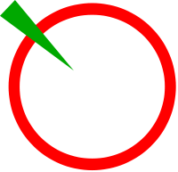

Проголосуй за партию, через социальные сервисы
Время делать свой выбор, настоящее народное голосвание стартует здесь.
КПРФ
Коммунистическая партия Российской Федерации
Сайт →
ЛДПР
Либерально-демократическая партия России
Сайт
Tweet
Единая Россия
Российская правоцентристская социал-консервативная политическая партия
Сайт
Справедливая Россия
Сайт
ЯБЛОКО

Сайт
Патриоты России
Сайт
Правое дело
Сайт
Что еще?
Оставь свой комментарий
Просто рполистай ниже
Расскажи друзьям
Просто рполистай ниже
Приди наконец на выборы
Просто рполистай ниже